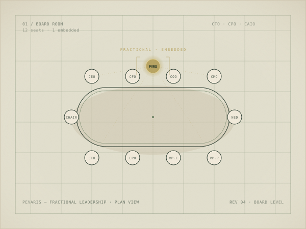

Senior technology leadership.
At the scale you need.
CTO, CPO, or Chief AI Officer - embedded in your business, at your board. Without the full-time cost.

Three roles
CTO
Chief Technology Officer
Technology strategy, delivery, and vendor management. For PE-backed businesses, scaleups, or teams needing senior oversight.
CPO
Chief Product Officer
Product leadership - roadmap, team management, customer insight. For product-led businesses.
CAIO
Chief AI Officer
AI strategy, governance, and adoption. For businesses building serious AI capability.
Need a different kind of leadership? Get in touch.
Not a consultant.
Not a hire.
A fractional CTO isn't a consultant who shows up with a slide deck. They're in your leadership meetings, making decisions, holding vendors accountable, and presenting to your board - on the days you need them, without the overhead of a permanent hire.
Why fractional makes sense
Senior experience from day one
No 6-month hiring process. No onboarding lag.
Scale up or down
No notice periods. No redundancy risk. Adjust as the business changes.
Outside perspective
Someone who's solved the same problem across different sectors and knows what good looks like.
Immediate accountability
Outcomes agreed before work begins. Not hours tracked after.
In practice
Pevaris has real-world experience delivering senior technology leadership across these sectors.
Premier League Football
Technology function built from zero. AI agents deployed in production. Stadium infrastructure rebuilt.
Fortune 500
$470m revenue supported. Digital transformation delivered while reducing budget by $240k p/a.
Fintech
£850m AUM. New product launched with £170m in deposits in year one.
Thinking about a permanent hire? Fractional is often the right first step - giving you time to understand what the role actually needs before committing to a full-time salary. We can help you work that out.